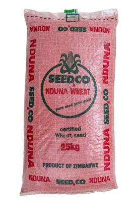

Wheat (Gorosi / Ingqoloyi)
Wheat is considered the second most import cereal in Zimbabwe after Maize. Wheat is used in flour production, breakfast cereal production among other things. The major wheat markets in Zimbabwe include the Grain Marketing Board and Cereal manufactures like Nestle. Wheat is planted between 1-10 May in the Lowveld, 7-15 Mayin the Middleveld and 1-25 May in the Highveld. Seed can be broadcasted using an oscillating spout (VICON) or double spinning disc fertiliser spreader or convectional seed drill planter with the counters removed at a rate of 120-130kg/ha at a planting depth of 30mm, and row spacing od 15-25cm. Fertiliser will then be broadcasted after the seed.
Fertilizer requirement is generally equal to 300-500kg/ha for basal and 225-300kg/ha for urea. Below are two options of fertilizer application:
On heavy soil, apply the urea in one application at 14-21 days after emergency
On sand split applications can be done at 14 days and at 35 days after emergency
Immediately follow with a light irrigation of water about 3-4 hours around 15- 20mm
Urea should be applied to an area that can be covered by an irrigation cycle
Irrigation The most critical stages of moisture require are during root development, heading, early flowering, and early grain filling (milk dough stages). Water The following recommendations can be used Pre irrigation before sowing and bringing soil slightly below field capacity Immediately after sowing 22 mm of water should be applied and this is repeated five days later Water is applied again 3-4 weeks after sowing or when the crown roots have developed. Apply 44mm after top dressing and herbicide application. Recommended water requirement for a season ranges from 350-600mm.
First option
- Mix the required basal and half of the total urea
- The mixture is applied and incorporated into soil just before planting using disc or roam harrow.
- If seed drilling method is used then the mixture can be applied during seed drilling
- The other half urea can be applied at flowering (6- 8 weeks)
- At flowerin apply the urea followed by a light irrigation of water about 3-4 hours around 15-20 mm
- Urea should be applied to an area that can be covered by an irrigation cycle.
Second option
Irrigation The most critical stages of moisture require are during root development, heading, early flowering, and early grain filling (milk dough stages). Water The following recommendations can be used Pre irrigation before sowing and bringing soil slightly below field capacity Immediately after sowing 22 mm of water should be applied and this is repeated five days later Water is applied again 3-4 weeks after sowing or when the crown roots have developed. Apply 44mm after top dressing and herbicide application. Recommended water requirement for a season ranges from 350-600mm.
Varieties
SC Nduna (Seedco)
Very high white coloured grain and has good grading and baking qualities. It is resistant to lodging but medium to tall in height.
It is immune to stem rust, moderate resistant to leaf rust and powdery mildew. Have high field resilience.
Pan (3490) Pannar 
High yielding (up to 6-8t/ha) and matures in about 158days. It has a good straw strength.
CRN 826 (Klein Karoo) 
Open pollinated variety with a medium growth period. It has an excellent grain quality with a good yield potential.